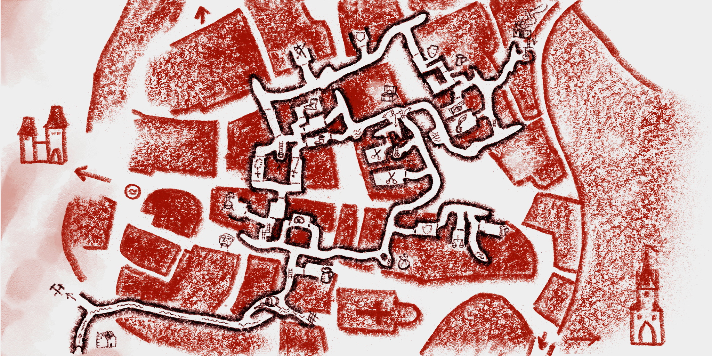

Ingame-Karten
Nutze die Maus oder Touch-Gesten zum Zoomen und Navigieren
Kuttenberg - Bezirke
Eine Karte von Kuttenberg mit eingezeichneten Bezirken

Kuttenberg - Untergrund
Eine Karte des Tunnelsystems in Kuttenberg

Nutze die Maus oder Touch-Gesten zum Zoomen und Navigieren
Eine Karte von Kuttenberg mit eingezeichneten Bezirken
Eine Karte des Tunnelsystems in Kuttenberg